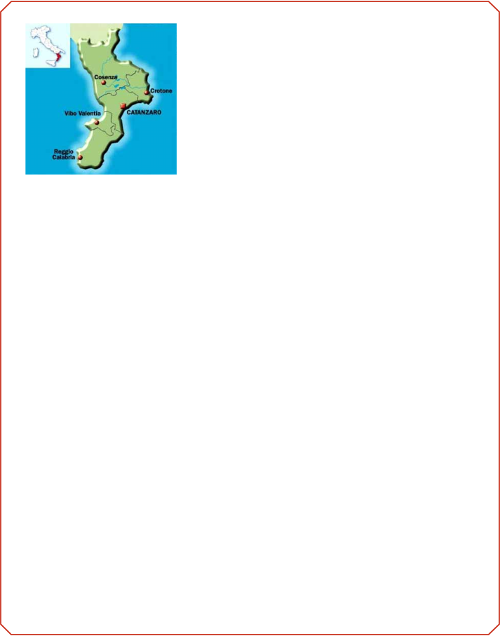

St. Ippolito SocietyMany people of San Ippolito that migrated to America and settled in Lansing, Michigan decided to continue their festival tradition. Since the first festival in 1938 held at Resurrection Church, the St. Ippolito Festival has been celebrated on the grounds of Saint Cornelius Cyprian Catholic Church at Bunker Hill, Michigan. More than 1,500 people from mid-Michigan’s Italian American community come together to honor their beloved saint on the second Sunday of August every year. The Festival begins with a mass, followed by a procession and singing of the “Procession Song” in Italian. The festival is a time to share food with family and friends and reminisce about festivals gone by while celebrating our Italian heritage. There are games, music and activities for people of all ages.St. Ippolito Society Officers and DirectorsTom LaMacchia-PresidentAnnette Love-Vice PresidentSteve LaMacchia-TreasurerBoard of DirectorsFrank SpagnuoloRobert LaMacchiaMike CarusoBill Jakovac